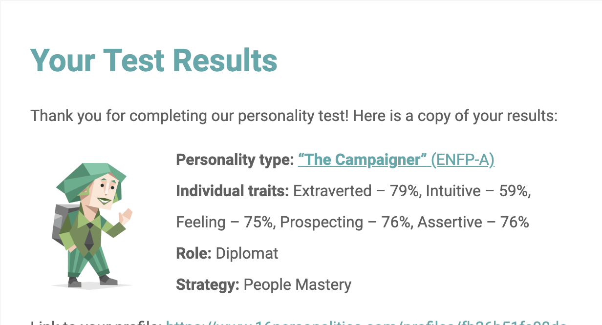
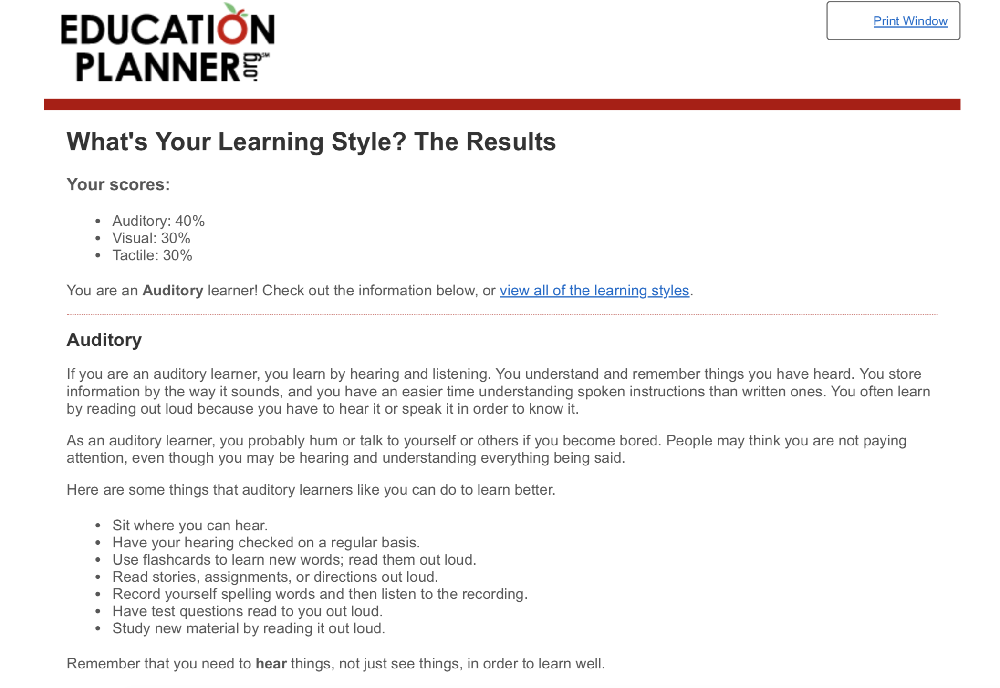
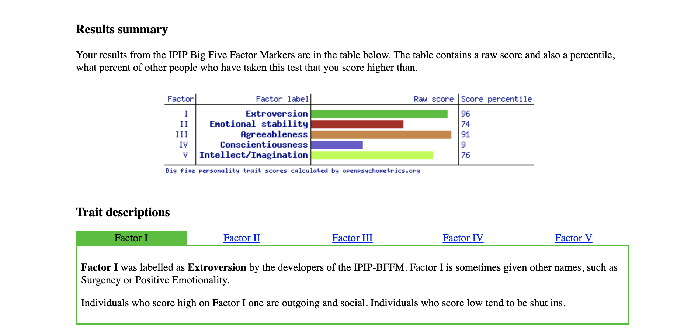

Personal
Profile
The results of an online Myers-Briggs test:

The results of an online learning style test:

The results of one further online test of your choosing. 5 Big personality test:

What do the results of these tests mean for you?
These results seem accurate to me and show that I am a confident person who would work well in a team environment, as well as someone who cares about other people. It also shows that my best way for learning is by hearing and listening and that I store information by the way it sounds.
How do you think these results may influence your behaviour in a team?
According to these results I would not be afraid to give my opinion where necessary and I would take charge rather than sitting back. Not only this but I will read the assignments or teamwork out loud in order to take in all of the information better.
How should you take this into account when forming a team?
When making a team I feel that as I am an extrovert I would do well in a team with other people who are happy to go with the flow and even introverted people as they will accept the ideas I input and go with them.
- © Untitled
- Design: HTML5 UP